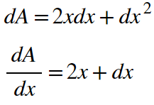

The Power Rule
There are differentiation rules for every type of continuous function. Let's start with the simplest: a monomial. Consider the function f(x)=xn where x is a regular variable, and n is any number. The so called "power rule" tells us that the derivative of f, f', can be found as follows:
The power rule is simple and concise. Take the value of the exponent, multiply the entire term by it, then decrease the exponent's value by 1. So, the derivative of y = x3 is 3x2. The derivative of y = x7 is 7x6. The derivative of y = x1000 is 1000x999. The power rule is extremely easy to follow, but why does it work? It seems awfully nice of math to give us such an easy formula for a derivative. Why exactly does the power rule hold true? Well before we get into the power rule in general, let's look at a neat visual intuition for the application of the power rule to the function y=x2. Consider its graph:

To find its derivative, we're going to use a different method of analysis than we used with limits. Consider the regular formula for slope: change in y divided by the change in x that caused it. We can apply this formula to find derivatives too. The only problem is that for a derivative, our change in x is 0, right? For now, let's alter our perception of this. Take a step back and consider the change in x to be an infinitesimally small number, as close to zero as possible. This relies on essentially the same intuition as limits. We see what happens as the change in x aproaches zero, even if we assume it doesn't actually equal zero. To represent this infinitesimally small change in x, we'll use the notation dx for a tiny difference in x. Following that theme, the change in y that results from this dx will be called dy. The value we're after then, would be the slope calculated by dividing the change in y by the change in x. In fact, dy/dx (when saying this, we usually just say the letters dydx, and ignore the division symbol) is an alternative notation used in calculus to represent a derivative. We can see our dy and dx in the graph below:
Remember! The dx here is drastically enlarged to illustrate what it is. In reality, we consider it to be infinitesimally small, so we can see what dy approaches as dx approaches 0. It might not be obvious where to go from here by looking at the graph. So let's switch to a different interpretation of the function y=x2. A geometric one:
Consider a square with a side length of x. Its area could then be represented by A = x2. Perhaps we can find a formula for the derivative of x2 using visual insight from this square. Let's see what happens when we increase the side length of the square by an infinitesimally small value, dx:
You can see that a change in x by dx resulted in the square having a new area, equal to the old area in red, plus the two blue rectangles, plus the green square. Of course, we're concerned with the rate of change here. That is, we only care about the amount by which the area changed when we increased the side lengths by dx. This amount, called dA, is equal to just the two blue rectangles plus the green square. The rectangles each have areas of X•dx, so the two of them combined have a total area of 2•X•dx. The green square has an area of dx2. So, our change in area, dA, is equal to 2Xdx + dx2. We can then divide both sides of the equation to get the ratio we've been after this whole time: dA/dx:

But remember! A defining property of dx is that it is infinitesimally small. When we use the notation dx, it is assumed that we're talking about the limit as dx approaches 0. So, for any value of x, the value of dx will be negligible compared to the value of 2x. Thus, we can effectively ignore the dx above. So, when A = x2, dA/dx = 2x, which follows in line with the power rule stated above. Neat, right? By the way, this geometric interpretation extends nicely into three dimensions, and the same exact process can be used with a cube to determine the derivative of y = x3. But after that, we're limited by the three-dimensional nature of our perception as humans. So let's take a moment to consider why exactly the power rule works for all values of n in a monomial xn.
Consider x2. What is the change in the function's value when you nudge the input value by a tiny amount, dx? Well adding a dx to the function's input changes it from x2 to (x+dx)2. Expanding this, we get x2 + 2xdx + dx2. Remember, we're only interested in the change in the function's value that resulted from the change in input. This change in function value is our dy (or df or dA, depending on what letter you use to represent your function). Because our function was x2 before adding dx to the input, the change to our function's value is just the 2xdx + dx2 part. Now, we're back where we were with the geometric example above. dy = 2xdx + dx2, so dy/dx = 2x + dx. Since dx is defined to go to zero, dy/dx effectively equals 2x. So what's new about this analysis compared to our geometric one? This one was done algebraically, so we should be able to extend it to higher dimensions:
And we can generalize this for xn using binomial theorem. For any value of n, there will be n+1 terms in the expansion. However, all but the first two terms will end up being multiples of dx after finding dy/dx. So, all of those terms will go to 0. What you'll be left with are the first two terms. The first term will always be xn, which was the value of the function before a dx was added to the input. So the only part we care about, the dy, is going to be the second term in the expansion. By the binomial theorem, that second term will always have a coefficient of n, and an exponent of one less than n on the x (the exponent on the dx was a 1, but that dx got divided out in order to solve for dy/dx). Thus, for any monomial xn, one can use the binomial theorem to show that dy/dx will equal nxn-1! By the way, the binomial theorem is also extremely intuitive and easy to understand if you take a moment to consider why expansion patterns emerge the way they do, instead of blindly following the formula :) Note that the reasoning used in this explanation is in perfect parallel with the limit definition of a derivative. Remember: there, we were taking the limit as Δx went to 0. Here, we use the term dx to represent a Δx with the limit built in. Again, whenever you see dx, think of it as an infinitesimally small nudge in the value of x. The size of dx is equal to the limit of Δx as Δx approaches 0.